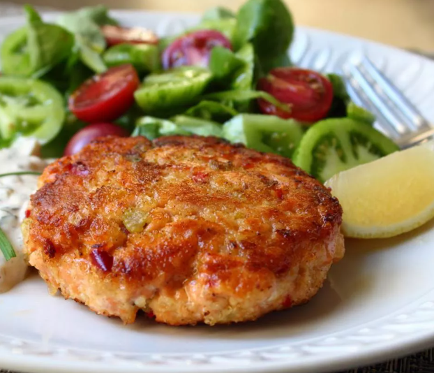

Chef John's Fresh Salmon Cakes
Home

Description
Salmon cakes are one of my go-to emergency meals. Every once in a while I like to use fresh salmon. Salmon is one of those products, like chicken, that's very easy to get into a rut with. People generally find a few recipes that work for them, and just stay with those, but this fairly simple preparation should be easy to add to anyone's rotation. Serve with lemon wedge and remoulade sauce. You can use any bread crumbs instead of panko breadcrumbs, if desired.
Ingredients
- Olive oil
- Minced onion
- Bell pepper
- Capers
- Minced garlic
- Salmon
Steps
- Heat extra virgin olive oil in a skillet over medium heat. Cook and stir onion, red pepper, celery, and a pinch of salt in hot oil until onion is soft and translucent, about 5 minutes. Add capers; cook and stir until fragrant, about 2 minutes. Remove from heat and cool to room temperature.
- Stir salmon, onion mixture, mayonnaise, 1/4 cup bread crumbs, garlic, mustard, cayenne, seafood seasoning, salt, and ground black pepper together in a bowl until well-mixed. Cover the bowl with plastic wrap and refrigerate until firmed and chilled, 1 to 2 hours.
- Form salmon mixture into four 1-inch thick patties; sprinkle remaining panko bread crumbs over each patty.
- Heat olive oil in a skillet over medium-heat. Cook patties in hot oil until golden and cooked through, 3 to 4 minutes per side.